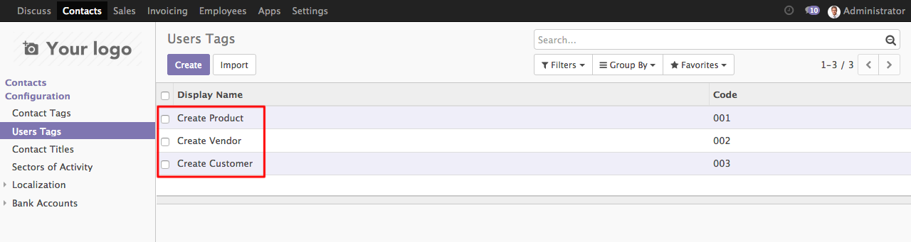

<section class="oe_container">
    <div class="oe_row oe_spaced">
        <h2 class="oe_slogan">Tags for Users</h2>
        <table width="801" border="0">
        </table>
        <p>&nbsp;</p>
        <p><strong>1. Go to Contacts > User Tags and Create new tags for user.</strong></p>
        <div class="oe_demo oe_picture oe_screenshot">
            <a href="https://www.alphasoft.co.id//">
                
            </a>
        </div>
        <div class="oe_demo_footer oe_centeralign"></div>
        <p><strong>2. Go to Settings > User and select one of the user and give tag for the user</strong></p>
        <div class="oe_demo oe_picture oe_screenshot">
            <a href="https://www.alphasoft.co.id//">
                
            </a>
        </div>
        <div class="oe_demo_footer oe_centeralign"></div>
        <p><strong>3. Display users in kanban view</strong></p>
        <div class="oe_demo oe_picture oe_screenshot">
            <a href="https://www.alphasoft.co.id//">
                
            </a>
        </div>
        <div class="oe_demo_footer oe_centeralign"></div>
    </div>
</section>
